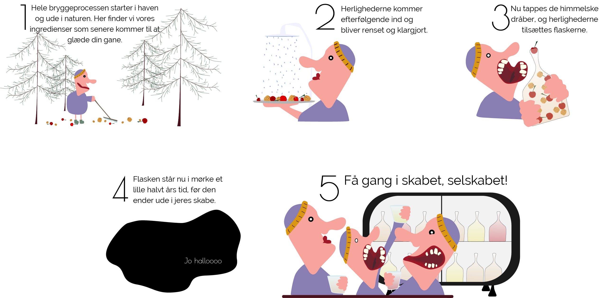
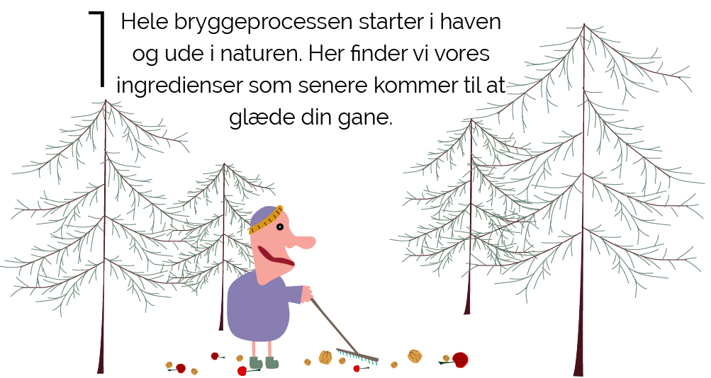
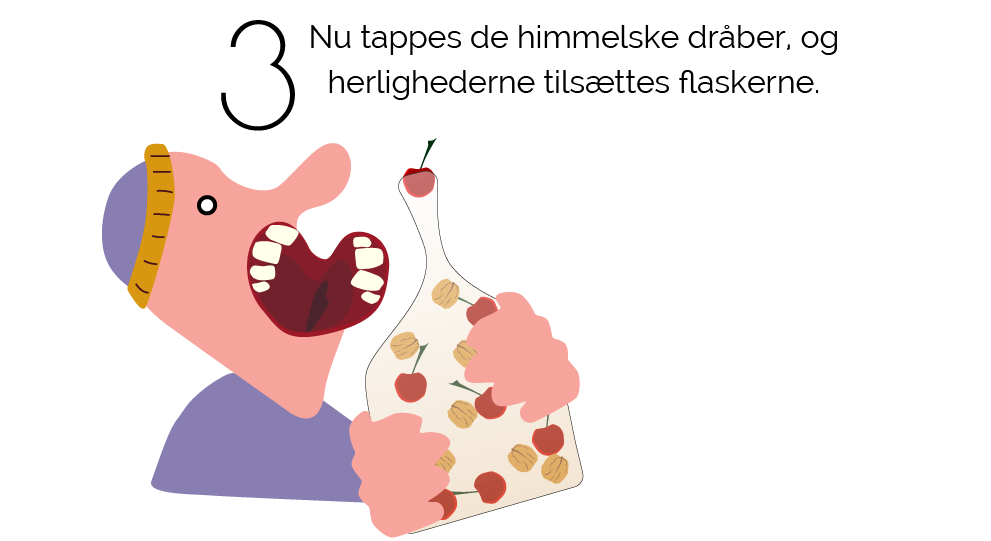
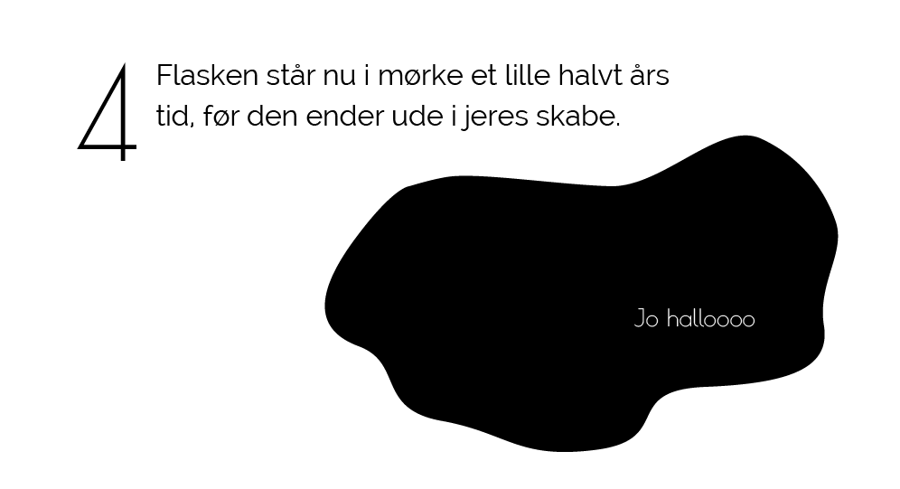
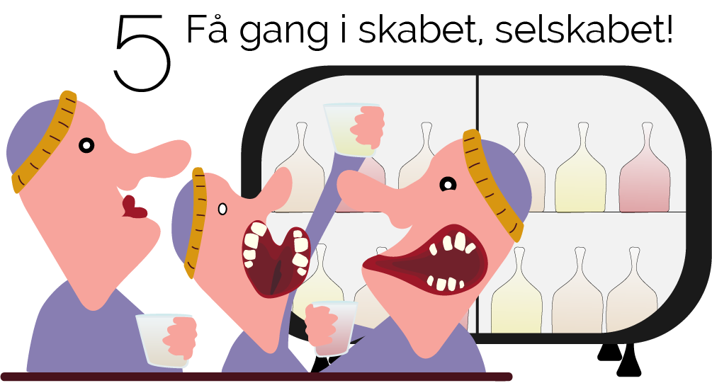
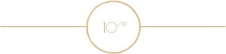
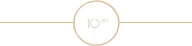
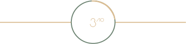
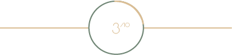
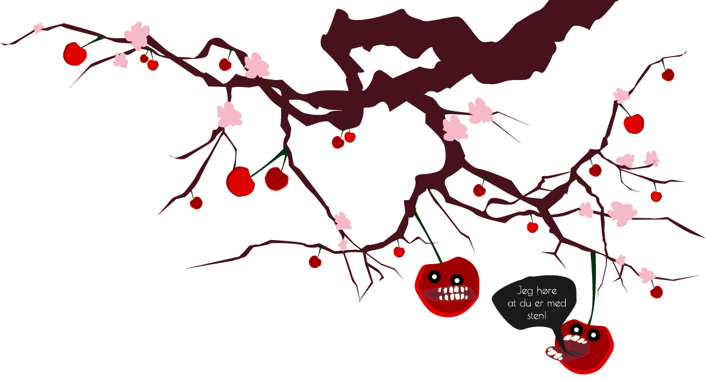

Haps haps se lige vores nye snaps. En lækkerbisken der
indeholder en dejlig smag af solmodne røde kirsebær, som bringer
sommer, sol og stemning til din gane. Kirstens`bær snaps har en
stærk appel til begge køn, for med den, er man altid i godt
selskab og højt humør. Den komplekse og raffinerede smag,
stammer fra bær doneret fra egne og lokalbefolkningens haver.
Men bare rolig du få ikke en på bæret af Kirsten, selvom den
indholder nogen af hendes Kirstens´bær.

Vi anbefaler
Kirstens`bær er skabt til det gode selskab og de gode stunder, hvor søde sager er tilstede. Snapsen er det perfekte match til desserter, da den med sin sødelige smag er perfekt da den diskret komplementere de søde sager. Men du kan uden tvivl, sige haps haps til den, hvis du bare føler for en lille lækker en.
Lækkerbiskner med denne lækkerbisken
Snapsen egner sig suverænt til søde sager, og den er mindst lige
så god i en dessert. Vi hos Far`s snaps kan varmt anbefale snapsen
til fremstilling af hjemmelavet fyldte chokolader. Med snapsen kan
du, let selv lave udsøgte lækkerbiskner, og nyde den sødelig og
komplekse smag på en helt ny måde.
Haps haps hvordan brygges Fars`s snaps
Den hjemmebryggede snaps har i generationer, skabt stemning, hygge og glæde til vores familie. En glæde vi ønsker at dele med alt og alle. Far`s snaps er et familieejet bryggeri, som brygger kvalitet snaps, med råvare fra egen have og lokalområdets skattekammer. Her får du et smugkig, på vores produktion og den snaps vi alle senere siger haps haps til.






Gør som mandlen og smut ind
og se vores andre snapse
 

FAR`S SNAPS Valnots snaps
Har en rund og lækker smag af valnød. Passer godt til ostebordet og det gode selskab.
 

FAR`S SNAPS Gran`de snaps
En mild smag af gran, som bringer julen helt til døren. Passer godt til julebordets forskellige lækkerier.

Du skal da med?
Da vi hos Far`s snaps elsker de røde bær, godt selskab og højt
humør, er vi i år at finde på Kertemindes Kirseværfestival. Her
hylder vi sammen de søde og saftige bær, den tredje weekend i
juli.
Få mere af vide om Kertemindes Kirseværfestivalg her
I den anledning, har vi stablet en lille konkurrence på benene, så
du har mulighed for at vinde vores snapse og andre lækkerbiskner.
Så tjek vores Facebook ud for mere information. Et lille tip: find
dine indre far-jokes frem.